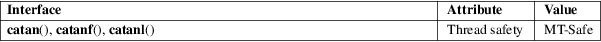

catan, catanf, catanl − complex arc tangents
Math library (libm, −lm)
#include <complex.h>
double
complex catan(double complex z);
float complex catanf(float complex z);
long double complex catanl(long double complex
z);
These functions calculate the complex arc tangent of z. If y = catan(z), then z = ctan(y). The real part of y is chosen in the interval [−pi/2,pi/2].
One has:
catan(z) = (clog(1 + i * z) − clog(1 − i * z)) / (2 * i)
For an explanation of the terms used in this section, see attributes(7).

C11, POSIX.1-2008.
glibc 2.1. C99, POSIX.1-2001.
/* Link with "−lm" */
#include
<complex.h>
#include <stdio.h>
#include <stdlib.h>
#include <unistd.h>
int
main(int argc, char *argv[])
{
double complex z, c, f;
double complex i = I;
if (argc != 3)
{
fprintf(stderr, "Usage: %s <real>
<imag>\n", argv[0]);
exit(EXIT_FAILURE);
}
z = atof(argv[1]) + atof(argv[2]) * I;
c = catan(z);
printf("catan() = %6.3f %6.3f*i\n", creal(c),
cimag(c));
f = (clog(1 + i
* z) − clog(1 − i * z)) / (2 * i);
printf("formula = %6.3f %6.3f*i\n", creal(f),
cimag(f));
exit(EXIT_SUCCESS);
}
ccos(3), clog(3), ctan(3), complex(7)